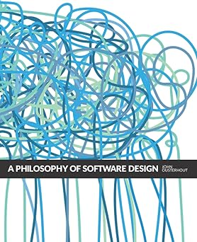
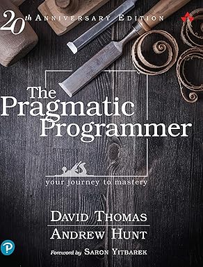
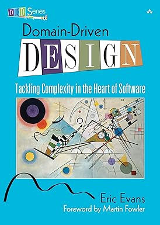
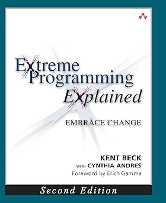

flowchart TD I["`Rough idea`"] --> A["`use /grill-with-docs to sharp domain model`"] A --> B["`use /to-prd to create the PRD`"] B --> C["`use /to-issues to create agent-ready issues`"]
Better Know A Skill:
Matt Pocock’s
PLANNINGSkills for Engineers
ATL BitLab AI Builders #18
What is a Claude Code Skill?
Skills extend Claude’s behavior
A skill is a markdown file that teaches Claude a new capability.
- Invoke manually with
/skill-namein Claude Code - Lives in your personal library:
~/.claude/skills/<skill-name>/SKILL.md - No code changes, no restarts — edit the file and it’s live
Skills can be dangerous
Skills run with your permissions, in your environment, with access to your files.
Public skill marketplaces have a real security problem:
- Credential theft — skills that read AWS keys, tokens, and config files and exfiltrate them to attacker servers
- Malware installation — skills that download and execute malicious payloads on your machine
- Memory poisoning — hidden directives injected into agent memory files that persist even after the skill is removed
- Intent hijacking — skills that silently execute unauthorized operations while appearing to do what you asked
Warning
Security researchers have confirmed malicious skills in public marketplaces combining malicious code with prompt injection techniques.
The Three No’s Principle
Before installing any skill from outside your own team:
| No. | Rule | Why |
|---|---|---|
| 1 | No unknown authors | Skills are code — treat them like a dependency. Check the author’s GitHub history. |
| 2 | No excessive filesystem or network access | A skill that needs to read your ~/.aws folder to “help with docs” is a red flag. |
| 3 | No skills without a public, inspectable source | If you can’t read the SKILL.md before installing, don’t install it. |
Tip
Matt’s skills are open source, written by a known author, and fully inspectable before installation.
Note
Three No’s Principle via JadenNews on Medium
Learn More: Skill Security
| Source | What it covers |
|---|---|
| ThreatDown: Weaponizing Autonomy | Attack vectors and memory poisoning in depth |
| Snyk: ToxicSkills Audit | First comprehensive security audit of a public skill marketplace |
| The Hacker News: ClawHavoc | Campaign analysis and platform response |
| Medium: Warning About Malicious Skills | User-facing framing and the Three No’s Principle origin |
Meet Matt Pocock
Who is Matt Pocock?
- TypeScript educator and open source author
- Creator of popular TS learning resources (Total TypeScript)
- Recently turned his attention to AI tooling and Claude Code skills
- Thesis: classic software engineering principles matter more, not less, in the AI era
Note
“Software Fundamentals Matter More Than Ever” — YouTube
His skills for engineers
Matt’s skills repo: github.com/mattpocock/skills
Today we focus on three skills that form a planning pipeline:
| Skill | Purpose |
|---|---|
/grill-with-docs |
Sharpen your idea through relentless questioning |
/to-prd |
Turn the sharpened idea into a Product Requirements Document |
/to-issues |
Break the PRD into agent-ready vertical slices |
Installing Matt’s skills
Matt Pocock’s skills repo includes an install script that copies skills into your personal library.
# Clone and install
git clone https://github.com/mattpocock/skills
cd skills
./link-skills.shSkills are then available in every Claude Code session as /skill-name.
The Planning Pipeline
From rough idea to agent-ready issues
Each skill picks up where the previous one left off, building on the conversation context.
/grill-with-docs
What it does
Interviews you relentlessly about your plan, one question at a time, until the domain is sharp and all ambiguity is resolved.
| Input | Your plan or idea (as conversation context) |
| Output | Resolved terminology, updated CONTEXT.md, optional ADRs |
| When to use | Before writing any spec — when the language is fuzzy |
| Key behavior | One question at a time, recommended answer included |
Inside the skill
Interview me relentlessly about every aspect of this plan
until we reach a shared understanding. Walk down each branch
of the design tree, resolving dependencies between decisions
one-by-one. For each question, provide your recommended answer.
Ask the questions one at a time, waiting for feedback on each
question before continuing.
If a question can be answered by exploring the codebase,
explore the codebase instead.DEMO
/grill-with-docs
Switch to terminal — run /grill-with-docs on the CLI task tracker repo
/grill-with-docs we will be building a cli based task tracker in rust. we should probably use a sqlite database and store it and any other config files somewhere in the user’s home directory. the user should be able to work with the task tracker from the command line. i would like an interactive terminal user interface if possible. the user starts the cli program, can see what tasks there are and what state each teask is in, the user can add notes to tasks, move tasks between states, and set blockers showing that one task depends on another task being complete. let’s talk about what features would be nice to have in the task tracker and put together a plan for how to build it.
/to-prd
What it does
Synthesizes the conversation context into a structured PRD and publishes it to the issue tracker. No additional interviewing — it works from what’s already been established.
| Input | Conversation context from /grill-with-docs + codebase |
| Output | PRD published as a GitHub issue |
| When to use | After grilling, when the domain is clear |
| Key behavior | Looks for deep modules; no re-interviewing |
Inside the skill
Sketch out the major modules you will need to build or modify
to complete the implementation. Actively look for opportunities
to extract deep modules that can be tested in isolation.
A deep module (as opposed to a shallow module) is one which
encapsulates a lot of functionality in a simple, testable
interface which rarely changes.
Tip

A Philosophy of Software Design — John OusterhoutDEMO
/to-prd
Switch to terminal — run /to-prd continuing from the grilling session
- Ask for an explaination of how the deep modules concept is achieved
/to-issues
What it does
Breaks the PRD into independently-grabbable issues using vertical slices. Each issue cuts through all layers end-to-end and is either AFK (agent can run it) or HITL (needs human interaction).
| Input | PRD from /to-prd (issue number or conversation context) |
| Output | GitHub issues published in dependency order |
| When to use | After PRD is approved |
| Key behavior | Thin vertical slices; AFK vs HITL classification |
Inside the skill
Break the plan into tracer bullet issues. Each issue is a
thin vertical slice that cuts through ALL integration layers
end-to-end, NOT a horizontal slice of one layer.
- Each slice delivers a narrow but COMPLETE path through
every layer (schema, API, UI, tests)
- A completed slice is demoable or verifiable on its own
- Prefer many thin slices over few thick ones
Tip

The Pragmatic Programmer — David Thomas & Andrew HuntDEMO
/to-issues
Switch to terminal — run /to-issues on the PRD
- Ask for an explaination of how the vertical slices and tracer bullets concept is achieved for each item in the breakdown.
What Just Happened?
From idea to execution-ready plan
In three skill invocations, we went from a rough idea to:
- A CONTEXT.md with resolved domain terminology
- A PRD published as a GitHub issue with user stories, modules, and testing decisions
- A set of vertical slice issues, each independently grabbable by an agent
The issues are agent-ready
Each issue produced by /to-issues:
- Describes an end-to-end behavior (not a layer)
- Has acceptance criteria
- Declares its blockers
- Is classified AFK (agent can run it) or HITL (human decision needed)
A fleet of parallel agents can now pick up the AFK issues and start building immediately.
Classic SE Still Matters
The books are in the skills
Matt’s skills aren’t just prompt wrappers — they encode opinions from decades of software engineering thought.
| Book | Author | Concept in the skills | |
|---|---|---|---|
| A Philosophy of Software Design | John Ousterhout |
Deep modules in /to-prd
|
|
| The Pragmatic Programmer | Thomas & Hunt |
Tracer bullets in /to-issues
|
|
The skills force the AI to think the way experienced engineers think — not just generate code, but design well.
Where to Go Next
Resources
Matt Pocock
- Skills repo + install script: github.com/mattpocock/skills
- “Software Fundamentals Matter More Than Ever”: youtube.com/watch?v=v4F1gFy-hqg
- YouTube channel: https://www.youtube.com/@mattpocockuk
Further Reading
A Philosophy of Software Design
John Ousterhout
The Pragmatic Programmer
Thomas & Hunt
The Design of Design
Frederick P. Brooks

Domain-Driven Design
Eric Evans

Extreme Programming Explained
Kent Beck
Try it tonight
- Install Matt’s skills:
git clone https://github.com/mattpocock/skills && ./link-skills.sh - Pick a project you’ve been putting off starting
- Run
/grill-with-docs, then/to-prd, then/to-issues - Hand the issues to an agent and watch it go